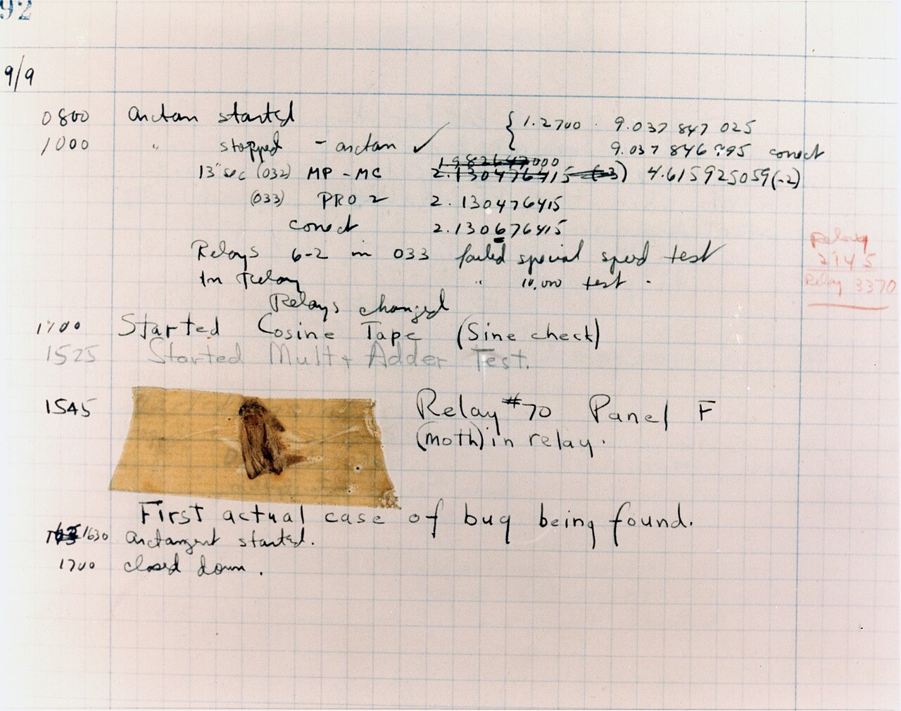

گاهی یک شرط منطقی نادرست، یک خطای محاسباتی، مدیریت اشتباه حافظه یا فرض اشتباه درباره ورودیها میتونه نتیجهای کاملاً متفاوت ایجاد کنه.

صفحهٔ اصلی دفتر ثبت وقایع Mark II (سپتامبر ۱۹۴۷) با پروانهٔ شبپره و یادداشت مشهور «اولین مورد واقعی پیدا شدن باگ». Smithsonian NMAH / Wikimedia Commons · منبع
چرا خطاها اهمیت دارن؟
چون نرمافزارها معمولاً در محیطهایی اجرا میشن که همه شرایط اونها از قبل قابل پیشبینی نیست.
برنامهای ممکنه برای ورودیهای معمولی درست کار کنه، اما با یک ورودی غیرمنتظره شکست بخوره.
برای همین، تست نرمافزار فقط به معنی اجرای یک برنامه و دیدن نتیجه ظاهری اون نیست.
باید شرایط مختلف رو بررسی کنیم، فرضهای برنامه رو به چالش بکشیم و تلاش کنیم خطاهایی رو پیدا کنیم که در استفاده روزمره بهراحتی دیده نمیشن.
چطور مثل یک برنامهنویس به مشکل نگاه کنیم؟
وقتی یک برنامه درست کار نمیکنه، قبل از تغییر تصادفی کد، این سؤالها رو بپرس:
انتظار داشتم چه اتفاقی بیفته؟
واقعاً چه اتفاقی افتاده؟
مشکل در چه شرایطی تکرار میشه؟
چه ورودیای باعث بروز خطا میشه؟
آیا میتونم یک نمونه کوچک برای بازتولید مشکل بسازم؟
این روش کمک میکنه بهجای حدس زدن، مسئله رو مرحلهبهمرحله بررسی کنی.
PODCAST · LISTEN
نسخهٔ صوتی این بخش
اگر حوصلهٔ خوندن نداری، همین بخش رو بهصورت صوتی گوش بده.
گویندهٔ خودکار مرورگر (جایگزین)
با گوشی اسکن کن؛ همین بخش باز میشه تا گوش بدی.
منابع پیشنهادی برای راستیآزمایی
متن این بخش ارجاع درونمتنی ندارد؛ فهرست زیر نقطهٔ شروع بررسی تحریریه است، نه تأیید ادعاهای تکتک جملهها. فهرست عمومی منابع شماره
Smithsonian National Museum of American History، Log Book With Computer Bug — پیوند
JSTOR Daily، The Bug in the Computer Bug Story — پیوند